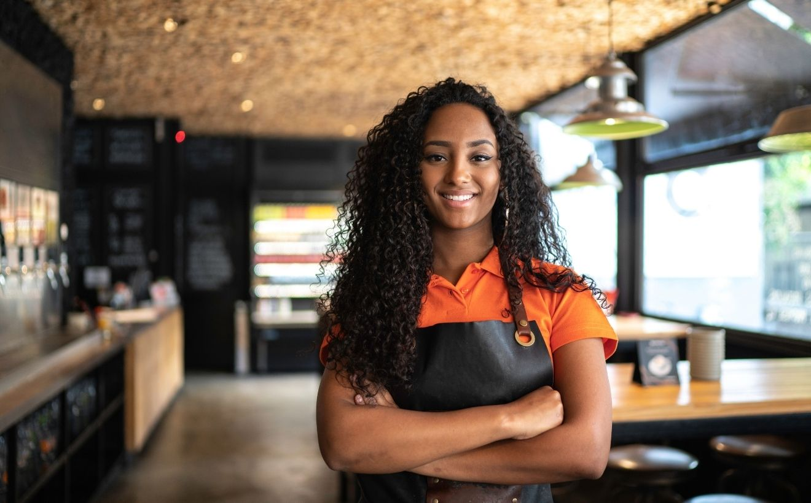
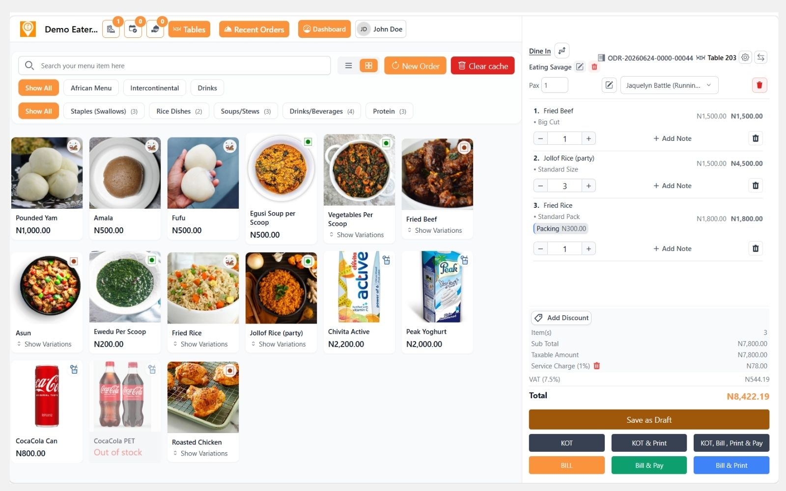

Manage Every Order
Dine-in, pickup, delivery, reservation, QR, and online ordering all sync into one workflow.
1.2M+ orders managedGoEatery brings POS, online ordering, QR menus, reservations, kitchen tickets, inventory, staff access, payments, and reports into a single calm operating system.

Dine-in, pickup, delivery, reservation, QR, and online ordering all sync into one workflow.
1.2M+ orders managedSend orders to kitchen stations instantly with printable tickets and clear order statuses.
Real-time KOT updatesTrack item performance, staff activity, payments, stock, and profit trends as they happen.
24/7 cloud accessPOS that keeps service moving
GoEatery gives owners and teams one browser-based workspace for orders, menus, payments, reservations, kitchen activity, and reports.

Built for different food operations
Restaurant module ecosystem
GoEatery adapts to quick-service restaurants, lounges, bars, cafes, cloud kitchens, hotels, caterers, and multi-branch food brands.
Fast checkout, split payments, table billing, discounts, taxes, receipts, and cashier controls.
Route orders to the kitchen instantly, track preparation status, and reduce service delays.
Manage bookings, table availability, guest notes, seating, and room/table assignments.
Launch branded ordering pages for QR menus, pickup, delivery, and direct customer sales.
Monitor stock levels, ingredients, low-stock alerts, item availability, and branch movement.
Store customers, preferences, order history, delivery addresses, and communication details.
Give every staff member the right access level without exposing sensitive controls.
Operational intelligence
Turn daily restaurant activity into reports you can act on: sales history, item demand, payment mix, order speed, staff activity, customer balances, and inventory movement.
Start in minutes
Create your workspace, add your menu, invite staff, connect order channels, and watch GoEatery become your daily operating rhythm.
Add your business profile, branch, taxes, payment methods, and operating preferences.
Add categories, items, prices, modifiers, availability, images, and kitchen routing.
Invite your team, print QR codes, accept orders, and track everything from dashboard reports.
Need guided setup? GoEatery support can help configure menus, branches, staff, printers, and reports.
Talk to SupportPricing plans
Start free for 15 days, then choose the GoEatery plan that fits how your restaurant operates.
Standard Plan
For a small and medium-scale restaurant. 15 days trial available.
₦15,000 / monthBusiness Plan
For medium-to-large-scale restaurants. 15 days trial available.
₦25,000 / monthBusiness Plus
For growing restaurant groups that need dispatcher workflows, hotel bookings, and multiple kitchens across branches.
₦35,000 / monthShort answers for teams comparing POS, ordering, and restaurant management platforms.
GoEatery is a cloud restaurant and bar management platform for sales, POS, reservations, menus, online ordering, kitchen tickets, customer records, payments, and reports.
Yes. Owners can create separate staff logins and assign role-based access for cashiers, managers, kitchen teams, and admins.
Yes. You can create customer-facing ordering pages for QR menus, delivery, pickup, and direct online orders.
Yes. Supported plans include multi-location controls for menus, staff, orders, and reporting.
Start with GoEatery today and give your team one stylish system for ordering, service, kitchen coordination, payments, inventory, and growth.